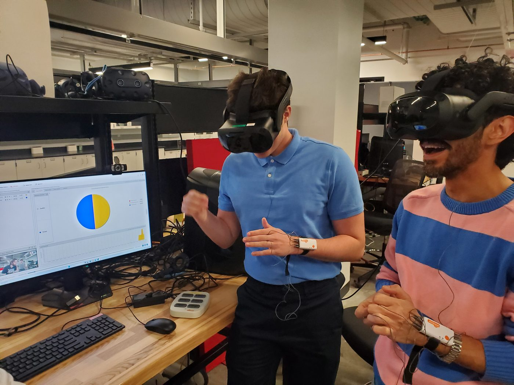

UHP Discover - Digital Futures
In the summer 2024 semester, I had the opportunity to work at the UC Center for Simulations and Virtual Environments Research (UCSIM). UCSIM is one of the many labs inside the Digital Futures (DF) research building. During my time in the DF building, I made multiple connections with my co-workers as well as the honors students from the other labs. In terms of work, most of my time was spent aiding a group of researchers during the beginning phases of their study on whether immersive technology, like VR, can improve language and cultural learning. Their team utilized our biometric data capture service to collect quantitative data on when and how much participants were physiologically responding while they were watching 360 videos inside a VR headset. Besides that study, I also worked on the software development team where we worked on creating simulations to solve real-world problems, train healthcare providers, and tell meaningful stories. This experience most heavily affected my definition of Global in Global Citizen Scholar. Working here allowed me to meet with our clients who worked for companies that are based all around the world. Previously, I assumed global to mean traveling to improve the world as a whole, but I now realize I can learn about other places and improve them without leaving Cincinnati. Not to say I wouldn't love to go to the locations of the clients we worked with.
The image below is of myself and my coworker Sam, who by the end was the only other student worker in the building. I chose this image for two reasons. First, because it represents how many meaningful connections I made on the team with the other student workers as well as the full-time employees. Second, because it shows us wearing the NeuroLynQ hardware with the NeuroLynQ software on the monitor in the background which was what I learned how to setup and use to aid the language and cultural learning study.
